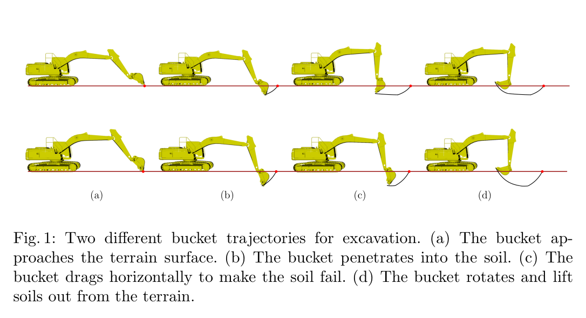
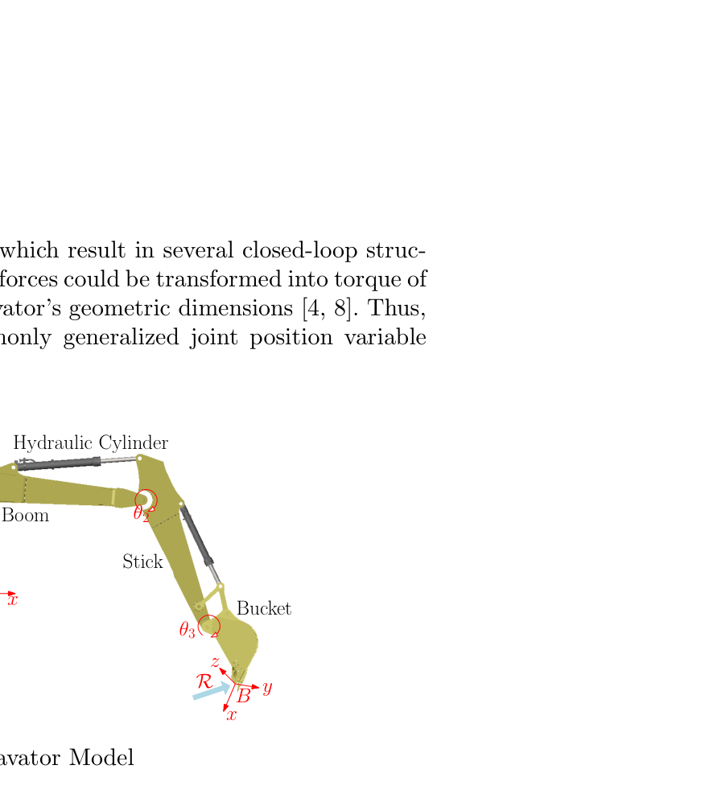
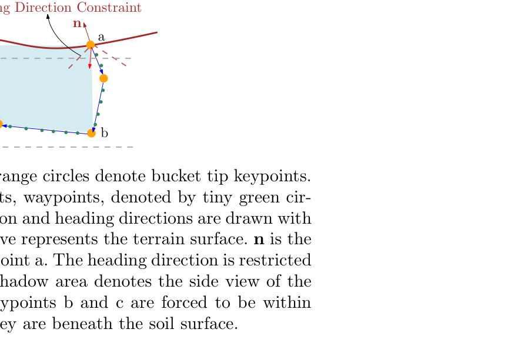
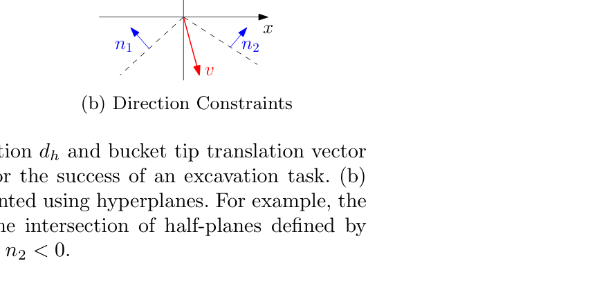
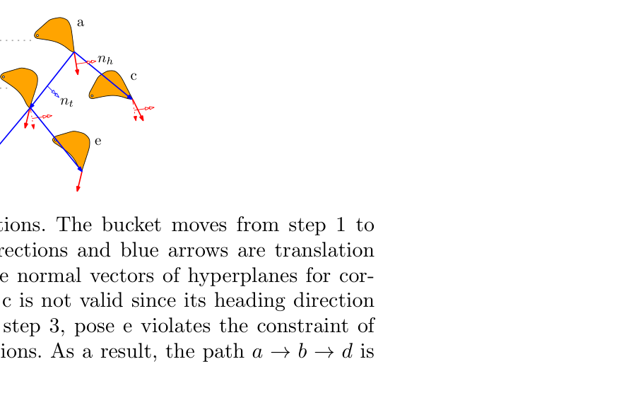
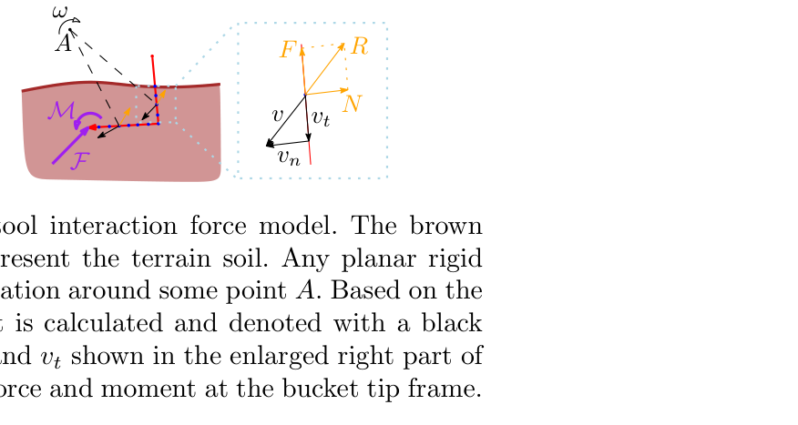
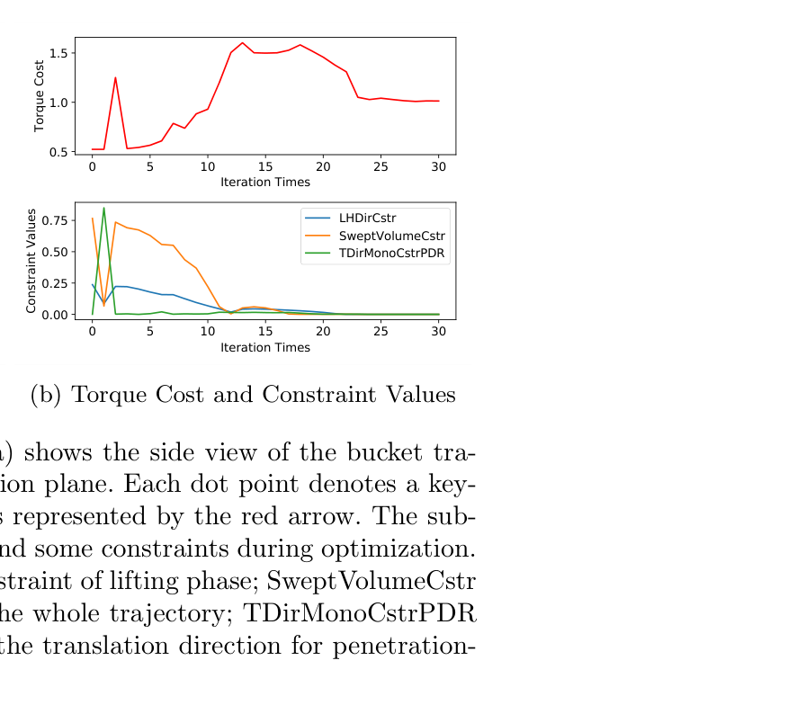
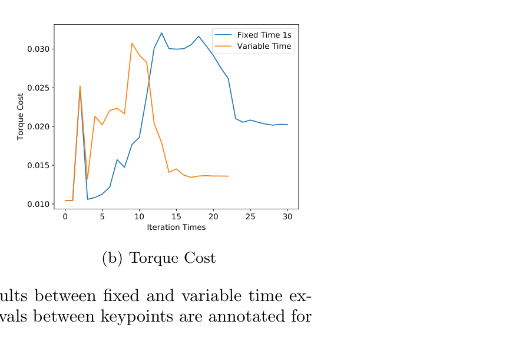
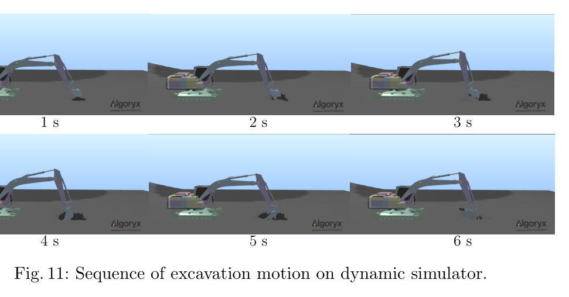
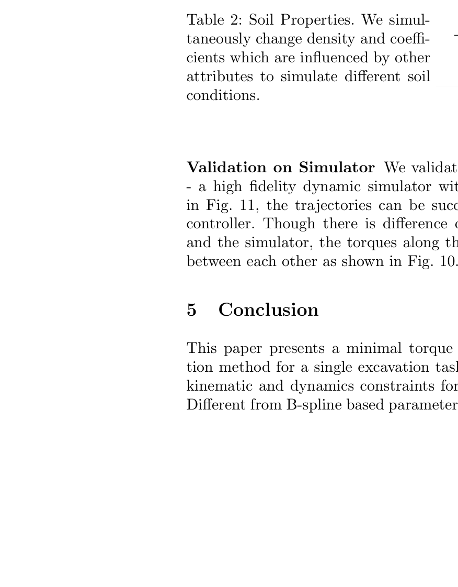

한줄 요약 — R-map 초기해를 소수 keypoint로 압축한 뒤 swept volume, 버킷 헤딩·이동방향, 관절 속도·토크 제약과 토양-도구 힘을 TrajOpt SQP에 결합한다. 관절자세와 구간시간을 동시에 조정해 목표 굴착량을 유지하면서 토크와 실행시간을 줄이는 단일 굴착 궤적 최적화법이다.
1.연구 배경 및 동기
굴착량·기계 한계·토양 저항·작업시간을 한 문제에서 다루기
굴착 한 사이클은 침투, 드래그, 회전, 인양으로 이루어지지만 같은 버킷 충전 목표를 만족하는 경로는 많다. 깊게 짧게 파거나 얕게 길게 끌 수 있고, 같은 형상도 구간시간에 따라 속도·가속도와 토크가 달라진다. 지중 저항도 토양 밀도·응집·속도·침투 깊이에 좌우되므로 위치 경로만 계획하면 토크 한계를 넘거나 시간과 연료를 낭비할 수 있다. 논문은 기하적으로 가능한 후보 중 토양 상호작용을 고려한 동역학적 최소토크 궤적을 찾는다.
선행 방법은 한 제어 시점의 힘을 제한하거나 접근각·높이·굴착거리 같은 소수 수작업 변수만 최적화했다. 모든 작은 timestep을 직접 변수로 두면 정확하지만 차원이 급증한다. 이 연구는 의미 있는 소수 keypoint와 구간시간만 변수로 두고, 그 사이를 작은 고정 간격으로 보간해 토크를 평가한다. 굴착의 단계 구조를 이용해 변수 수를 줄이면서 기하·기구학·동역학·작업시간을 함께 다룬다.

원문 Figure 1 · PDF p.2 — Fig. 1: Two different bucket trajectories for excavation. (a) The bucket ap- proaches the terrain surface. (b) The bucket penetrates into the soil. (c) The bucket drags horizontally to make the soil fail. (d) The bucket rotates and lift soils out from the terrain.
선행 연구의 한계
한 제어명령의 힘 제한은 전체 굴착 사이클과 시간배분을 최적화하지 않는다.
접근각·높이·거리만 쓰는 단순 파라미터화는 실제 굴착 자유도를 크게 줄인다.
B-spline 점대점 최적화는 swept volume과 버킷 방향 같은 작업 제약을 빠뜨릴 수 있다.
모든 조밀 waypoint를 변수로 두면 토크는 정확하지만 계산차원이 커진다.
이 연구의 기여
소수 관절 keypoint와 구간시간을 함께 최적화하고 보간 waypoint에서 토크를 계산한다.
swept volume, 헤딩·이동방향, 단조 방향변화, 관절 속도·토크 한계를 한 문제에 넣는다.
정수압·속도·마찰 기반 토양력을 역동역학에 포함하고 AGX에서 시간·토양 적응을 검증한다.
2.방법론 및 시스템 구성
입력은 굴착기 링크·질량·관성·관절 한계, 버킷 크기, 지표면, 목표 굴착량, 토양 계수와 R-map 초기 궤적이다. 직접 변수는 관절 keypoint 집합 k와 인접 keypoint 사이 시간 T이고, 각 구간은 작은 Δt로 선형 보간한다. 속도·가속도·외력·토크는 조밀 waypoint에서 계산하지만 solver가 바꾸는 값은 keypoint와 시간뿐이다.
목적함수는 보간된 모든 waypoint의 관절 토크 제곱합이다. 제약은 swept volume, 침투·드래그·회전·인양의 버킷 heading과 translation direction, 방향의 단조 변화, 관절 속도·토크 한계다. 네 핵심점이 만드는 면적과 버킷 폭으로 굴착량을 근사해 토크가 작은 공중 경로 대신 목표량을 파는 해를 강제한다.
토양력은 버킷의 back plane과 separation plane을 면요소로 나누어 계산한다. 요소 깊이의 정수압, 법선속도 저항, 접선마찰을 합쳐 버킷 끝의 힘·모멘트를 만들고 재귀 역동역학에 넣는다. TrajOpt SQP가 keypoint와 시간을 갱신하며, 최종 궤적은 별도 토양·동역학 모델을 가진 AGX에서 추종 검증한다.
처리 파이프라인
1
R-map 초기해
Compact R-map에서 침투-드래그-회전-인양의 기구학적 초기 궤적을 찾아 비선형 SQP를 시작한다.
2
시간 가변 keypoint
k와 T만 변수로 두고 Δt 간격 waypoint를 보간한다. Q_i=T_i/Δt라 시간은 속도·가속도와 목적함수 항 수를 함께 바꾼다.
깊이의 정수압과 법선속도 항을 토양 계수로 조절해 버킷 면요소에 작용하는 법선 저항을 만든다. 원문 PDF 9~10쪽 식 (13), (15).
면요소 힘·모멘트 합산
F=\sum_i R_i,\quad M=\sum_i r_i\times R_i
모든 면요소의 법선력과 마찰력을 버킷 끝단의 resultant force와 moment로 통합한다. 원문 PDF 11쪽 식 (18).

원문 Figure 2 · PDF p.6 — Fig. 2: Excavator Model

원문 Figure 3 · PDF p.7 — Fig. 3: Excavation constraints. Large orange circles denote bucket tip keypoints. Between each pair of adjacent keypoints, waypoints, denoted by tiny green cir- cles, are linearly interpolated. Translation and heading directions are drawn with blue and red directions. The brown curve represents the terrain surface. n is the normal vector of the surface at the keypoint a. The heading direction is restricted between a range around n. The blue shadow area denotes the side view of the excavated swept volume. Depths of keypoints b and c are forced to be within the range [Z1, Z2] to guarantee that they are beneath the soil surface.

원문 Figure 4 · PDF p.8 — Fig. 4: (a) illustrates the heading direction dh and bucket tip translation vector dt, which are two important factors for the success of an excavation task. (b) illustrates direction constraints represented using hyperplanes. For example, the direction of v is constrained within the intersection of half-planes defined by vector n1 and n2, i.e. v · n1 < 0 and v · n2 < 0.

원문 Figure 5 · PDF p.9 — Fig. 5: Monotonic change of the directions. The bucket moves from step 1 to step 3. Red arrows denote heading directions and blue arrows are translation directions. Double arrows represent the normal vectors of hyperplanes for cor- responding directions. At step 2, pose c is not valid since its heading direction locates at the forbidden halfplane. At step 3, pose e violates the constraint of monotonic change of translation directions. As a result, the path a →b →d is a feasible path.

원문 Figure 6 · PDF p.10 — Fig. 6: Bucket simplification and soil-tool interaction force model. The brown curve and shadow area beneath it represent the terrain soil. Any planar rigid body motion could be regarded as a rotation around some point A. Based on the rotation motion, velocity of each point is calculated and denoted with a black arrow v, which is decomposed into vn and vt shown in the enlarged right part of figure. F and M denote the resultant force and moment at the bucket tip frame.
굴착기 모델의 boom/stick/bucket 질량은 각각 1434.52/656.189/809.59 kg, 토크한계는 950000/425000/300000 N·m, 속도한계는 모두 0.785 rad/s로 설정했다.
버킷 width·length·depth는 각각 1 m인 모델을 사용했으며, AGX Dynamics가 굴착기와 현실적 지형 상호작용을 독립적으로 시뮬레이션했다.
토양 적응 실험은 soft soil과 hard soil의 밀도 및 K_p,K_v,K_s를 동시에 달리했다.
실험 프로토콜
Experiment I은 swept volume이 0.8 m³보다 작은 초기 궤적에서 시작해 0.8≤V≤1.0 m³와 방향·기계 제약을 만족하도록 최적화했다. 모든 keypoint 간 시간은 1초로 고정했다.
가변시간 실험은 동일한 문제에서 T_i를 변수로 풀고, 고정시간 결과와 전체 실행시간 및 torque cost 수렴을 비교했다.
토양 실험은 제약을 이미 만족하는 동일 초기 궤적에 두 토양 계수를 적용해, 외력 변화만으로 최적 경로 깊이가 어떻게 달라지는지 비교했다.
마지막으로 최적 궤적을 AGX에 입력해 단순 trajectory controller로 1~6초의 굴착 동작을 실행하고 관절각과 토크를 계획값과 비교했다.
비교 기준
제약을 위반하는 초기 R-map 궤적
keypoint 간 시간이 고정된 궤적 최적화
동일 초기해에 대한 soft soil와 hard soil 설정
최적화 내부 역동역학 예측과 AGX 실행 결과
평가 지표
토크 제곱합 목적함수와 iteration별 constraint value
swept volume 범위 및 방향·속도·토크 제약 만족 여부
총 궤적 시간과 최적화 수렴시간
토양 조건별 버킷 경로 깊이
관절별 토크 곡선과 관절각 추종 일관성

원문 Figure 7 · PDF p.12 — Fig. 7: Experiment I. The sub-figure (a) shows the side view of the bucket tra- jectory which is parallel to the excavation plane. Each dot point denotes a key- point at which the heading direction is represented by the red arrow. The sub- figure (b) draws values of torque cost and some constraints during optimization. LHDirCstr is the heading direction constraint of lifting phase; SweptVolumeCstr is the constraint of swept volume for the whole trajectory; TDirMonoCstrPDR is the monotonic change constraint of the translation direction for penetration- dragging-rotation phases.

원문 Figure 8 · PDF p.13 — Fig. 8: Comparison of optimization results between fixed and variable time ex- periments. In sub-figure (a), time intervals between keypoints are annotated for the time variable trajectory.
원문 Figure 10 · PDF p.14 — Fig. 10: Comparison of optimization results on dynamic simulator. Blue curves are for the initial trajectory; Orange curves are for the optimal trajectory; Green curves are for the optimal simulation trajectory.

원문 Figure 11 · PDF p.14 — Fig. 11: Sequence of excavation motion on dynamic simulator.
핵심 결과 해석
제약 만족 실험의 초기 궤적은 swept volume 하한 0.8 m³를 만족하지 못했다. 최적화가 체적·인양 heading·translation direction 단조성 제약을 줄이는 동안 더 많은 토양을 파므로 torque cost가 먼저 증가했고, 제약이 만족된 뒤 다시 감소했다. 이는 목표 굴착량과 자세를 확보한 범위 안에서 동역학 비용을 낮추는 solver 동작을 보여준다.
가변시간 궤적은 구간별 0.70~1.01초를 배분해 총 5.5초였고, 1초 고정 구간의 6.4초보다 0.9초 짧았다. 논문은 time scaling이 더 빨리 수렴하고 비용도 낮췄다고 기술한다. 동역학적으로 가능한 궤적은 평균 150초 이내에 계산했으므로 단일 굴착의 저빈도 계획에는 가능하지만 고주파 재계획에는 길다.
hard soil은 ρ=2500 kg/m³, K_p=3, K_v=1000, K_s=0.8, soft soil은 ρ=1000 kg/m³, K_p=1, K_v=300, K_s=0.5로 설정했다. 단단한 토양의 최적 궤적은 더 얕았고 사람 운전 경향과 맞았다. AGX에서는 단순 제어기로 최적 궤적을 추종했으며, 계획과 시뮬레이터의 토양 모델 차이에도 관절 토크 패턴이 일관됐다고 보고한다.
정량 결과
평가 항목
정량 결과
조건·맥락
원문 근거
동역학적 실행 가능 궤적 계산시간
평균 150 s 이내
소수 keypoint의 시간 가변 최적화; 논문이 평균값으로 보고
PDF p.4
고정시간 궤적 총시간
6.4 s
keypoint 간 1초 고정 비교
PDF p.12
가변시간 궤적 총시간
5.5 s
구간시간을 최적화한 결과
PDF p.12
목표 swept volume
0.8~1.0 m³
Experiment I 제약 만족 실험
PDF p.11
관절 속도한계
0.785 rad/s
boom, stick, bucket 모두 동일
PDF p.11
관절 토크한계
950000 / 425000 / 300000 N·m
boom / stick / bucket 모델 사양
PDF p.11
soft soil 밀도
1000 kg/m³
K_p=1, K_v=300, K_s=0.5
PDF p.13
hard soil 밀도
2500 kg/m³
K_p=3, K_v=1000, K_s=0.8
PDF p.13
실패 사례와 경계조건
초기 R-map 궤적은 기구학적으로 가능하지만 swept volume 0.8 m³ 하한을 만족하지 못해 그대로는 작업 목표에 실패했다.
토양력 모델은 버킷을 두 평면과 균질 계수로 단순화하므로 AGX의 토양 모델과 차이가 있으며, 실제 비균질 토양의 국소 파괴를 직접 표현하지 않는다.
평균 150초 이내의 계산시간은 매 굴착 뒤 지형이 빠르게 바뀌는 온라인 고주파 재계획에 직접 적용하기 어렵다.
AGX 추종은 성공했지만 실차 유압 지연, 밸브 비선형, 센서오차와 실제 토양 변동은 시험하지 않았다.
5.한계 및 향후 연구
현재 한계
상용 동역학 시뮬레이터에 한정되고 실제 유압 굴착기 실험이 없다.
토양-도구 모델은 두 버킷 면과 균질 경험계수에 의존하며 AGX 모델과도 차이가 있다.
토양 계수를 실행 중 추정하지 않아 미지·층상·혼합 토양에 자동 적응하지 못한다.
평균 150초 이내 계산은 현장 재계획에 길고 수렴 실패율·worst-case 시간이 없다.
단일 사이클만 최적화하며 상위 task planner와 실제 연료·유압에너지를 다루지 않는다.
향후 연구
task planner와 결합해 굴착 위치·목표 체적·단일 사이클 궤적을 계층적으로 계획한다.
실제 여러 토양의 system identification으로 힘 모델을 실측 데이터에 정합한다.
Compact R-map이 ‘움직일 수 있는가’를 빠르게 답한다면 이 연구는 그 초기해가 ‘목표량을 담으면서 기계 부하를 견딜 수 있는가’를 검사한다. 기구학 도달성, 토양 외력, 액추에이터 한계와 시간배분을 연결하므로 상위 목표 선택과 유압제어 사이의 동역학 계획층으로 배치할 수 있다.
현장에서는 토양 계수를 관절압력·실린더 변위·버킷 자세로 온라인 식별하고, 이전 해 warm-start와 짧은 horizon으로 150초 계획시간을 줄여야 한다. 평가는 토크 제곱합뿐 아니라 유압에너지, 굴착량, 계획지연과 한계 위반을 함께 기록해야 한다.
R-map의 빠른 기구학 해를 SQP warm-start로 사용해 초기 실행불가능성과 수렴 부담을 줄일 수 있다.
swept volume 제약은 상위 작업계획의 목표 굴착량을 연속 관절궤적의 명시적 조건으로 전달한다.
토양력 계수를 온라인 식별하면 경질·연질 토양에 따라 깊이와 시간배분을 자동 조절하는 적응형 계획기가 된다.
실제 유압굴착기에서는 torque surrogate를 실린더 힘·펌프 압력·연료 소비와 교차검증해야 한다.
가변시간 궤적은 후속 MPC 또는 궤적추종기에 시간 참조를 제공하지만 계획-제어 지연과 재계획 연속성 검증이 필요하다.
7.전체 그림·표
본문 핵심 위치에 배치하지 않은 원문 Figure와 Table을 원문 페이지 순서로 수록한다.

원문 Table 2 · PDF p.13 — Table 2: Soil Properties. We simul- taneously change density and coeffi- cients which are influenced by other attributes to simulate different soil conditions.